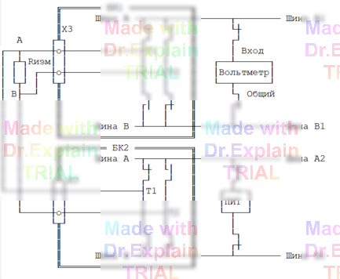

5.2.4 Команда РТ (проверка в режиме Релейной 4-х Точки)
РТ — проверка цепей на сообщение по четырёхпроводной схеме. Цепи задаются в формате ССИРТ; точки ОК подключаются релейным коммутатором, измерение выполняют цифровой вольтметр и плата ПИТ.
Синтаксис
<метка> РТ [<диапазон>] [<режимы>] <список_цепей_ССИРТ>
Пример
240 РТ 0.1<Ом<0.4, 2 В, 0.05 А, 1000 мс *ССИРТ*
Диапазоны и погрешности
| Диапазон, R | Погрешность |
|---|---|
| 0.01 Ω ≤ R < 0.1 Ω | ±0.01 Ω |
| 0.1 Ω ≤ R ≤ 1 Ω | ±0.05 Ω |
| 1 Ω < R ≤ 100 Ω | ±5 % |
Режимы контроля
| U, В | I, мА | Выдержка, мс |
|---|---|---|
| 4 - 10 | 10 – 100 | 1 – 99 990 |
Если режимы не указаны, по умолчанию выбираются:
• R ≤ 1 Ω → U = 4 В, I = 100 мА;
• R > 1 Ω → U = 4 В, I = 10 мА.
Функциональная схема измерения команды РТ
